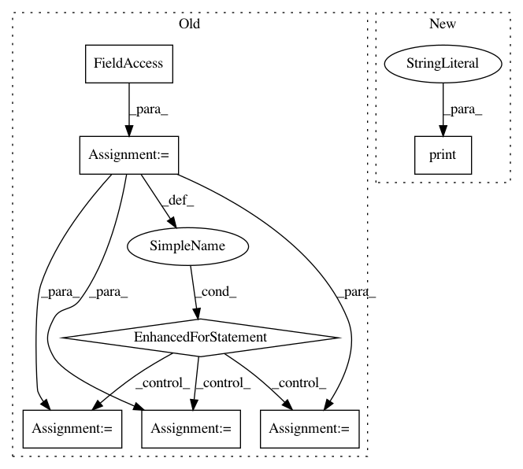

e673c301c42f64a5ff53b78effdf78b0855e83e5,cistar-dev/cistar/core/base_env.py,SumoEnvironment,reset,#SumoEnvironment#,317
Before Change
self.traci_connection.simulationStep()
// TODO: Replace these traci calls with initial_state accesses
for veh_id in self.ids:
self.traci_connection.vehicle.setSpeedMode(veh_id, 0)
if veh_id in self.rl_ids:
self.traci_connection.vehicle.setLaneChangeMode(veh_id, 0)
self.vehicles[veh_id]["type"] = self.traci_connection.vehicle.getTypeID(veh_id)
self.vehicles[veh_id]["edge"] = self.traci_connection.vehicle.getRoadID(veh_id)
self.vehicles[veh_id]["position"] = self.traci_connection.vehicle.getLanePosition(veh_id)
self.vehicles[veh_id]["lane"] = self.traci_connection.vehicle.getLaneIndex(veh_id)
self.vehicles[veh_id]["speed"] = self.traci_connection.vehicle.getSpeed(veh_id)
self.vehicles[veh_id]["fuel"] = self.traci_connection.vehicle.getFuelConsumption(veh_id)
self.vehicles[veh_id]["distance"] = self.traci_connection.vehicle.getDistance(veh_id)
self.vehicles[veh_id]["absolute_position"] = self.get_x_by_id(veh_id)
self.state = self.getState()
observation = np.copy(self.state)
return observation
After Change
// re-initialize perceived state
self.vehicles[veh_id] = self.initial_vehicles_state[veh_id]
print("veh id:", veh_id)
print("edge:", self.vehicles[veh_id]["edge"])
print("position:", self.vehicles[veh_id]["position"])
print("lane:", self.vehicles[veh_id]["edge"])
print("speed:", self.vehicles[veh_id]["edge"])
In pattern: SUPERPATTERN
Frequency: 3
Non-data size: 7
Instances
Project Name: flow-project/flow
Commit Name: e673c301c42f64a5ff53b78effdf78b0855e83e5
Time: 2017-06-06
Author: akreidieh@gmail.com
File Name: cistar-dev/cistar/core/base_env.py
Class Name: SumoEnvironment
Method Name: reset
Project Name: shibing624/pycorrector
Commit Name: 68b5105ae8c0225f426ddfa8928b9bfe9eb76b76
Time: 2020-02-27
Author: xuming624@qq.com
File Name: pycorrector/utils/tokenizer.py
Class Name:
Method Name:
Project Name: GoogleCloudPlatform/python-docs-samples
Commit Name: b92890a9f389909a81e6640d527e29a17ae1922f
Time: 2017-08-03
Author: jonwayne@google.com
File Name: speech/cloud-client/transcribe_async.py
Class Name:
Method Name: transcribe_gcs